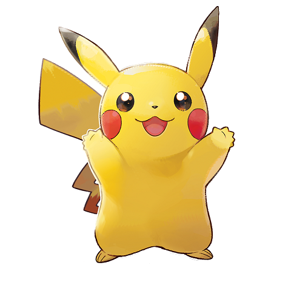

Pikachu (ピカチュウ Pikachuu) is an Electric-type Pokémon, which was introduced in Generation I. Pikachu is renowned for being the most well-known and recognizable Pokémon. Over the years, Pikachu has become so popular that it serves as the Pokémon franchise mascot. It is the Version Mascot and Starter Pokémon for the game Pokémon Yellow and its remake, Pokémon: Let's Go, Pikachu!. It is also well known from the anime, where Ash Ketchum, the protagonist, owns a Pikachu. It evolves from Pichu when leveled up with high friendship and evolves into Raichu when exposed to a Thunder Stone. When in Alola, it evolves into its Alolan Form. It can also Gigantamax into Gigantamax Pikachu.
Biology
Physiology
Pikachu are small, chubby, and incredibly cute mouse-like Pokémon. They are almost completely covered by yellow fur. They have long yellow ears that are tipped with black. A Pikachu's back has two brown stripes, and its large tail is notable for being shaped like a lightning bolt. On its cheeks are two circle-shaped red pouches used for storing electricity. They turn yellow and spark with electricity when its about to use an Electric attack, such as Thunderbolt. It has also been known to generate small surges of electrical energy in anger or for protection, like in the anime.A female Pikachu looks almost exactly the same as a male, with the exception of her tail, which is rounded at the end and has an inward dent, giving it the appearance of a heart. However, in earlier anime episodes, and in the games prior to Generation IV, female and male Pikachu look identical.As Gigantamax Pikachu, it becomes larger and chubbier (similar to its Generation I design). Its tail becomes longer and stores all of the electricity it generates, causing it to glow a bright yellow and enabling it to become as powerful as a lightning strike. Its power is equal to that a power plant; however, it is difficult to use it in peoples' homes since Pikachu can only remain in its Gigantamax form for a short time.When several of these Pokémon gather, their electricity can cause lightning storms.It‘s Shiny Pokémon color of Pikachu is orange.In "A Plethora of Pikachu!", according to Pikala, the fur from Pikachu in the Kanto region sparkles in sunlight, while the Pikachu from Alola fur is silky smooth and shines in sunlight.
Special abilities
Pikachu's special ability is Static, which can cause paralysis in battle if hit by a physical move. In Pokémon Black and White's Dream World, the Trainer receives a Pikachu with the Lightningrod ability. Pikachu are capable of learning Volt Tackle, a powerful Electric-type physical move exclusive to the Pikachu family of Pokémon.Partner Pikachu is also capable to learning special moves: Zippy Zap, Floaty Fall, Splishy Splash, and the Partner Power, Pika Papow.
Z-Moves
Pikachu is one of the few Pokémon in Sun and Moon which have a special Z-Move dedicated to them. The Z-Move Catastropika is Pikachu's signature move. The move is activated by the Z-Crystal, Pikanium Z. Its base is Volt Tackle. Catastropika can be learned only by a Pikachu with Volt Tackle, and becomes unusable if Volt Tackle is forgotten or if the Pikachu evolves into Raichu. The Z-Move 10,000,000 Volt Thunderbolt is Ash Pikachu's signature move. The move is activated by the Z-Crystal, Pikashunium Z. Its base is Thunderbolt. Pikachu, being an Electric-type, is capable of using the Z-Crystal, Electrium Z, to use the Z Move Gigavolt Havoc.
Gigantamax
Pikachu is one of the few Pokémon in Sword and Shield that can Gigantamax by having a special member from it species. Gigantamax Pikachu is the only known Pokémon capable of using the G-Max Move, G-Max Volt Crash.
Evolution
Pikachu evolves into a Raichu by using a Thunder Stone. It evolves from Pichu when its happiness is maxed with the trainer in game.
Trivia
Pikachu and Eevee are the only Starter Pokémon in the canon RPG games that deviates from the usual Grass, Fire, and Water-typings. Pikachu is the only Pokémon to have appeared in every episode, special, and movie in the series in some shape or form. Though Pikachu isn't in the Unova Pokédex, an image of it can be found in a building in Castelia City before the National Pokédex is obtained, as well as on a billboard above the Castelia City Pokémon Center. There are also several Pikachu shaped hedges in Striaton City. Also, there is a giant Pikachu float next to the Nimbasa City Gym. In the game Pokémon Battle Revolution, Pikachu can use the HMs Surf and Fly. Starting from Pokémon X and Y, Ikue Ōtani provides the voice of Pikachu in the place of a cry. In Super Smash Bros. Brawl, there are three variations of Pikachu. One has a headband similar to Brendan's hat, one has a hat similar to Ash's hat and another has goggles. Pikachu has appeared on more merchandise than any other Pokémon, including the limited edition N64, Game Boy Color, DS and 3DS consoles. In the 2011 Guinness World Records Book: Gamers Edition, Pikachu placed 20th in the "Top 50 VideoGame Characters of All Time. "Pikachu is the Japanese mascot for the 2014 FIFA World Cup. It is the first Pokémon in Pokédex order to have a baby form. Pikachu and Meowth have inverse Pokédex numbers, 25 and 52. Coincidently, they are based on a cat and a rodent. Even more coincidently, Ash's Pikachu and Team Rocket's Meowth are rivals, like the popular cartoon, Tom and Jerry. (Ash and co. usually thwarting Team Rocket's various crazy schemes.)Having a Pikachu hold a Light Ball will double its Special Attack and Attack stats. Though not the first Pokémon created, Pikachu was the first Electric-type Pokémon created, conceived after the type was suggested to Sugimori and designed around the concept of electricity and the common symbol for lightning. Pikachu is one of Veronica Taylor's favourite Pokémon. A protein is named after Pikachu, the name of the protein is "pikachurin". Pikachu is one of the 16 Pokémon to be made into a puppet in Japan. A 2002 Carl's Jr toy features Pikachu playing the saxophone. There are two Pikachu-centric spin off games, Hey You, Pikachu! (N64) and Detective Pikachu (3DS). Pikachu was originally set to have a third evolution named Goruchu.